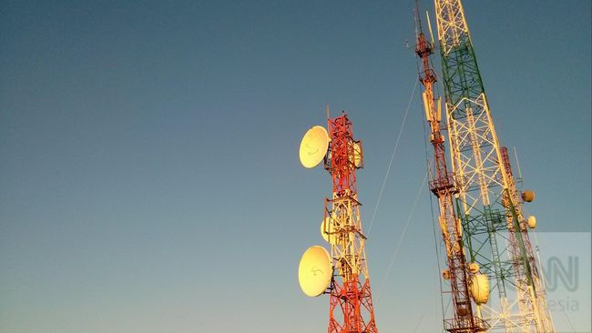

Manut Kominfo, Operator Selular Siap Hapus Layanan 3G
Title descirption, Dec 29 2021
Manut Kominfo, Operator Selular Siap Hapus Layanan 3G
Jakarta, CNN Indonesia -- Sejumlah operator seluler tanah air menyatakan siap untuk hapus layanan 3G, mengikuti arahan Menteri Komunikasi dan Informatika (Menkominfo) Johnny G. Plate. Sebelumnya Johnny meminta operator seluler di Indonesia untuk menghapus layanan 3G untuk menangani kesenjangan digital yang masih terjadi di Indonesia. Penghapusan ini disebut untuk menjadikan 4G sebagai 'tulang punggung' konektivitas dalam negeri. "Sinyal 4G ini jadi tulang punggung komunikasi nasional kita. Saya juga sudah minta kepada operator seluler untuk fade out 3G," ujar Menkominfo dalam webinar Retropeksi 2021 dan Outlook 2022 Kementerian Kominfo, Selasa (28/12), dilansir dari detikcom. "Kenapa 3G yang di-fade out, bukan 2G? Karena memang beda penggunanya. Kalau 2G itu komunikasi suara, sedangkan 3G itu komunikasi data," imbuhnya. Merespons permintaan tersebut sejumlah operator seluler menyatakan siap mengikuti arahan tersebut, salah satunya Telkomsel. "Telkomsel akan mengikuti kebijakan/arahan yang nantinya akan dikeluarkan oleh pemerintah, dengan tetap menjaga dan memastikan terpenuhinya kualitas layanan kepada pelanggan secara optimal," kata Aldin Hasyim General Manager External Corporate Communications dalam pernyataan resmi, Rabu (29/12). Selain itu, XL Axiata juga menyatakan siap mengikuti arahan tersebut demi meningkatkan kualitas jaringan dan layanan yang diberikannya. Group Head Corporate Communication XL AxiataTri Wahyuningsih mengatakan bahwa pihaknya telah melakukan penataan ulang sebagai eksekusi dari permintaan Menkominfo tersebut. "XL Axiata juga telah melakukan penataan ulang teknologi yang digunakan (technology refarming) dari 3G ke 4G." katanya kepada CNNIndonesia.com melalui pesan teks, Rabu (29/12). "Saat ini penataan ulang teknologi tersebut telah dilakukan secara bertahap di sejumlah area/wilayah tertentu sejak beberapa waktu lalu," lanjutnya. Ia juga mengatakan bahwa frekuensi 3G yang sebelumnya digunakan akan dialihkan untuk layanan 4G. Indosat Ooredoo juga menjadi salah satu operator seluler yang menyatakan komitmennya untuk mendukung arahan pemerintah tersebut. Senior Vice President Corporate Communications Indosat Ooredoo Steve Saerang menyebut bahwa Indosat Ooredoo akan melanjutkan strateginya untuk menghadirkan layanan dengan jaringan berkualitas. "Kami akan melanjutkan 'Turnaround Strategy' dengan menghadirkan layanan 4G dengan jaringan berkualitas video, termasuk di daerah non-3T, untuk mempercepat transformasi digital di Indonesia," katanya kepada CNNindonesia.com melalui pesan teks, Rabu (29/12). Steve juga mengatakan bahwa pihaknya akan terus berusaha mengedukasi masyarakat yang masih terhubung ke jaringan 3G untuk segera beralih ke 4G. "Kami terus melakukan edukasi kepada pelanggan yang masih terhubung dengan 3G, mengenai manfaat yang akan dinikmati dengan berpindah ke layanan 4G," kata Steve.
Tentang Saya

Welcome to my website, I am a fat Koala onsectetur adipiscing elit, sed do eiusmod tempor incididunt ut labore et dolore magna aliqua.